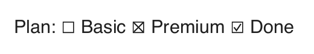

A Word form says "Ticked: ☒ Agree". Extract its text with officeParser 8.5.0 and you get "Ticked: Agree", two spaces and no box. A drop-down set to Blue gives nothing at all where Blue was. The answers were dropped, and nothing said so.
I wrote about reading a filled PDF form, where the values are not in the page but in widgets laid over it. Word and OpenDocument files have the same problem in another shape: a check box or a drop-down is not text in the document either. This post is about where each format keeps them, how officeParser 8.6.0 reads them, and how its own PDF writer draws a box no font it has can draw.
Word: A Field With No Result
Word's legacy form fields (the ones under Developer, Legacy Tools) are fields, like a page number. A field is a run marking its start, its instruction, a run marking where its result begins, the result, and a run marking its end. For a text field, the result is the typed value, so text extraction already found it. Here is a check box instead, cut down to what matters:
<w:r><w:fldChar w:fldCharType="begin">
<w:ffData>
<w:name w:val="C1"/>
<w:checkBox><w:sizeAuto/><w:default w:val="0"/><w:checked/></w:checkBox>
</w:ffData>
</w:fldChar></w:r>
<w:r><w:instrText> FORMCHECKBOX </w:instrText></w:r>
<w:r><w:fldChar w:fldCharType="separate"/></w:r>
<w:r><w:fldChar w:fldCharType="end"/></w:r>
Between separate and end there is nothing. Word draws the box from the field's data,
w:ffData, which sits inside the start marker. A text extractor that reads results reads an empty
one. A drop-down is the same: its entries are w:listEntry elements in its data, and its result is
empty too.
So officeParser reads the data:
-
A check box is ticked when
w:checkedsays so. A bare<w:checked/>means on,w:val="0"off. Where there is now:checked,w:defaultdecides, as Word does. A ticked box reads as ☒ and an empty one as ☐: the characters U+2612 and U+2610, the same ones the PDF form post settled on, so a ticked box survives into plain text, a CSV cell or a search index. -
A drop-down reads as its chosen entry: the one
w:resultpoints to, counting from 0, thenw:default's, then the first.
OpenDocument: Two Kinds of Form
LibreOffice Writer has two ways to put a check box in a document, and they are stored nothing alike.
The first is Word's legacy fields, kept when LibreOffice opens and saves a Word form. They become field marks, with the state as named parameters:
<field:fieldmark text:name="__Fieldmark__2_3781684256"
field:type="vnd.oasis.opendocument.field.FORMCHECKBOX">
<field:param field:name="Checkbox_Checked" field:value="true"/>
</field:fieldmark>
<field:fieldmark text:name="__Fieldmark__18_3781684256"
field:type="vnd.oasis.opendocument.field.FORMDROPDOWN">
<field:param field:name="Dropdown_ListEntry" field:value="Red"/>
<field:param field:name="Dropdown_ListEntry" field:value="Green"/>
<field:param field:name="Dropdown_ListEntry" field:value="Blue"/>
<field:param field:name="Dropdown_Selected" field:value="2"/>
</field:fieldmark>The second is LibreOffice's own form controls, and here the text holds nothing but a pointer. Where a check box stands in a paragraph, the paragraph has an empty shape naming a control by its id:
<draw:control text:anchor-type="as-char" draw:name="Shape2"
svg:width="1.5004in" svg:height="0.2504in" draw:control="control1"/>
The control itself is somewhere else: in office:forms, at the start of the document's body, where
a form lists every control it has with its state and its label:
<form:checkbox form:name="Agree" form:id="control1"
form:label="I agree" form:current-state="checked"/>
<form:checkbox form:name="News" form:id="control2"
form:label="Send news" form:state="checked"/>
Those two boxes look alike and are not. form:state is the box's default, the state it returns to
when a form is reset; form:current-state is what it shows. "Send news" is ticked by default and
shows empty. officeParser reads the current state, so the two read differently, as they look.
Each kind of control has its own attribute for what it shows. Radio buttons have
form:current-selected. Text fields have form:current-value. List boxes mark each
selected option. A text area keeps its lines as paragraphs, and a date field may store
20240131, digits alone, in files from older releases. A password field is read as one bullet a
character, never as the password. Here is a LibreOffice test file on both releases:
| Line in the document | 8.5.0 | 8.6.0 |
|---|---|---|
| Check boxes | Terms: and then . | Terms: ☒ I agree and ☐ Send news then ☐. |
| Radio buttons | Size: | Size: ☐ Small ☒ Large |
| Text field | Name: . | Name: Jane Doe. |
| List box, combo box, date | Fruit: ; City: ; When: ; | Fruit: Apple, Cherry; City: Berlin; When: 2024-01-31; |
Because a control is named, not written, one control can be named many times. A small file can name one long
text area thousands of times, and every writer would write it out each time. officeParser reads each control
once and shows it whole the first time; every later naming is a single run with its line breaks as spaces,
and counts toward decompressionLimits.maxRepeatedContent, the budget for content a document
repeats by reference.
Drawing a Box No Font Has
Reading the boxes was half of it. officeParser also writes PDFs, and its native engine draws text in the fonts it is given, or in the PDF's built-in Helvetica and Courier when it is given none. Those fonts have no ☐. Here is a line with all three boxes, written to PDF and read back, on 8.5.0:
warning: CONTENT_NOT_REPRESENTABLE | The 'non-WinAnsi characters (native engine)' content has no faithful representation in pdf output ...
read back: Plan: ? Basic ? Premium ? Done
8.6.0 adds a font of its own when a box has no other font to draw it: a Type 3 font, the kind of PDF font
whose glyphs are drawing instructions instead of an outline file. It has three glyphs, an empty, a ticked
and a crossed box, each a square and its mark as filled paths in the text's colour, and a heavier set for
bold text. Its ToUnicode map gives each glyph its character, so the box copies and searches as
☐, ☑ or ☒:

read back: Plan: ☐ Basic ☒ Premium ☑ Done
pdftotext: Plan: ☐ Basic ☒ Premium ☑ Done
The second line is Poppler's pdftotext, which reads PDFs without pdf.js. It needed one more
glyph. Poppler works out the size of a Type 3 font's text from the width of the font's first glyph, and with a box
first it took the boxes for text 1.6 times their size, set on a line apart from the words around them. A space, half an em
wide and never drawn, placed first in the font, fixed that.
What It Does Not Read Yet
- A control placed inside a drawn shape's text, a rectangle or a custom shape, is still dropped. In a frame it is read.
- LibreOffice Calc's form controls, in a spreadsheet, are not read.
- A button reads as nothing, though it shows its label.